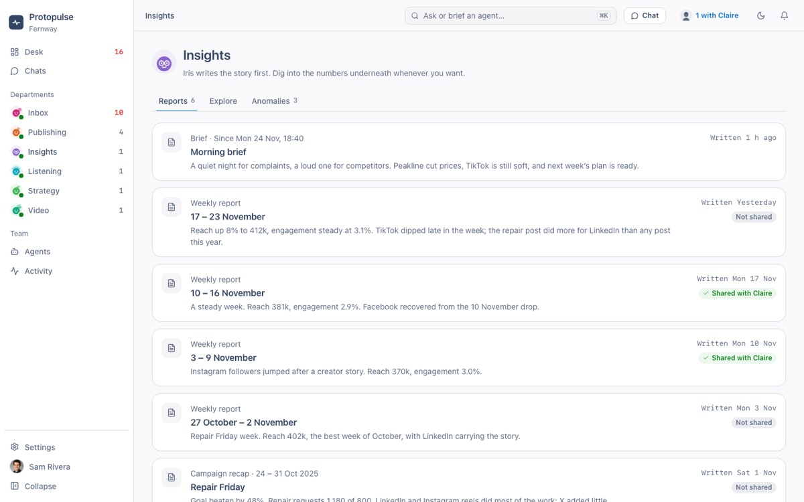
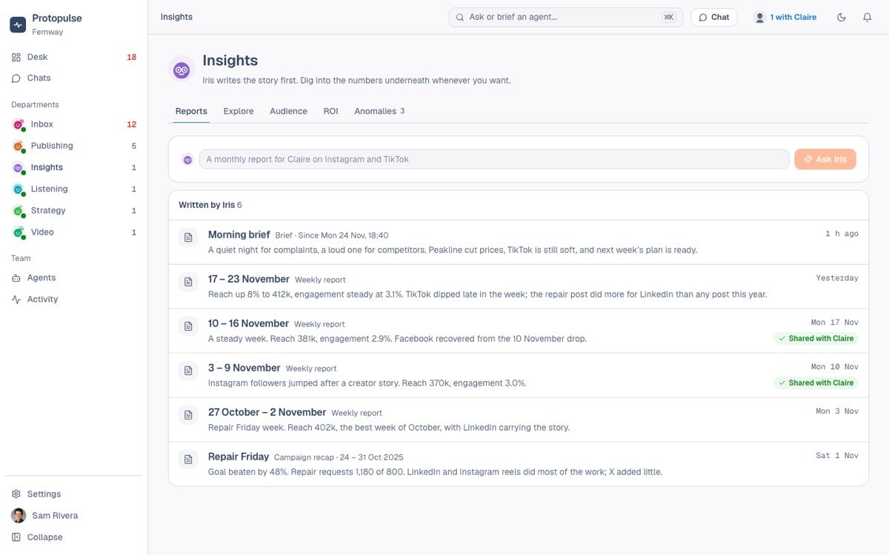
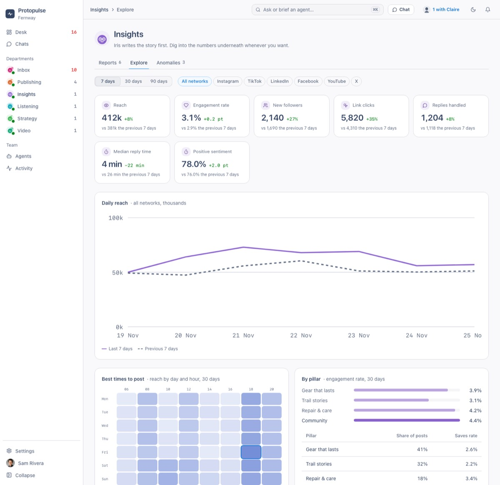
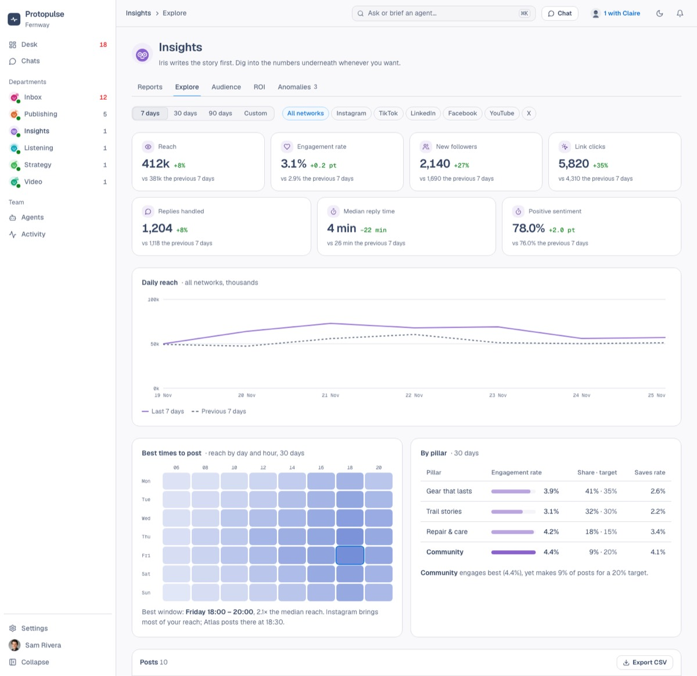
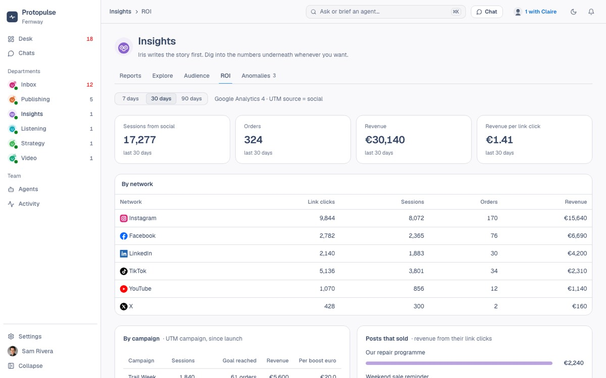
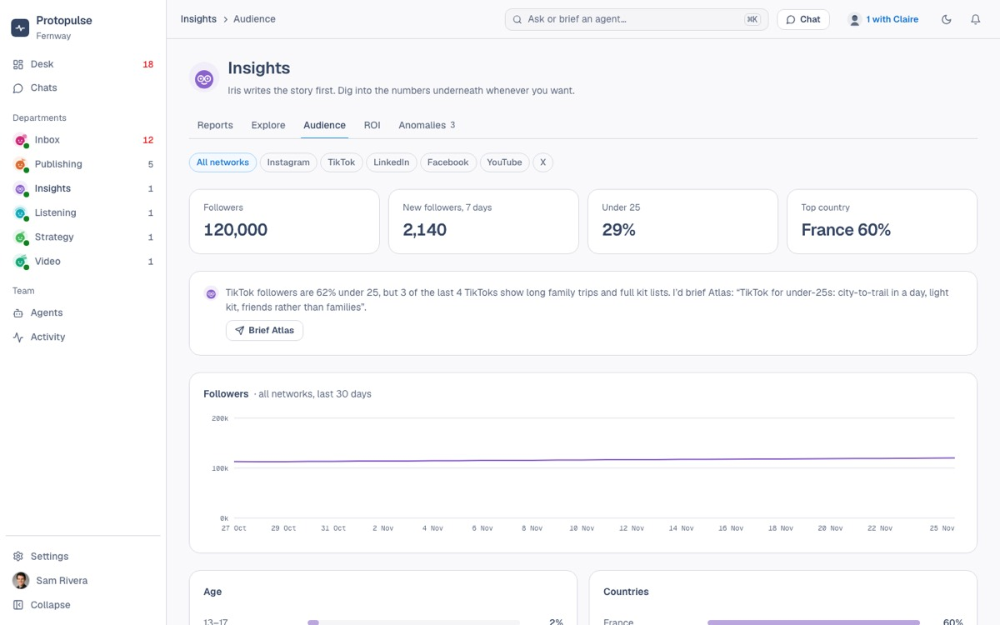
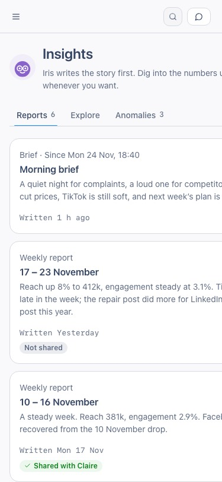
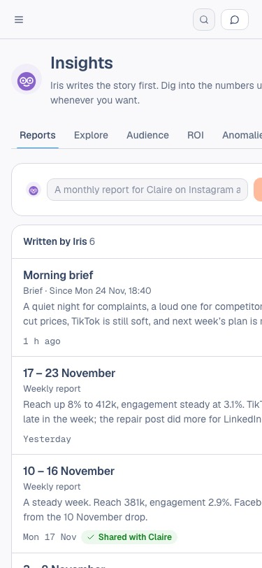

Iris · Insights depth
26 November 2026. Iris brought to the level of Agorapulse's Reports, agentic-first: she computes, watches and writes; Sam asks for a report in a sentence and changes it section by section, and every number on every screen, in Chat and in ⌘K comes from the same place. 15 pull requests on main, from #26 to the closing one.
In numbers
Parity, capability by capability
Agorapulse's Analytics (from the agorapulse-product reference) against what Protopulse had on 25/11 at 73a7ba2 and what it has now.
| Agorapulse | Before | Now (agentic version) |
|---|---|---|
| One set of numbers | Reels vs carousels and best time said three different things in the report, Chat and ⌘K | metrics.ts is the only source: Explore, reports, the brief, Chat, ⌘K and follow-up answers read the same selectors |
| Indicators (alerts) | Alert rules never evaluated; six constant anomalies | Rules checked on every heartbeat against what Iris measures; a rule Sam creates can fire within a second; the level of Raise anomalies decides: listed, Desk card, or done by Iris with a real Undo; the anomaly names its rule |
| Profile reports, period, comparison | 7 / 30 / 90 days, fixed best-time heatmap, inert post rows | Custom range; best time per network, following the filter; sorting by network, pillar and author; a post row opens its numbers against the network's average |
| Report Studio | Six constant reports | “Iris, a monthly report for Claire on Instagram and TikTok” in ⌘K, Chat or Insights; sections move, shorten, go and come back by button or sentence, each with Undo; saved templates; a campaign of Sage's or a label of Atlas's in the request brings its own section |
| Scheduled reports, export | Download .md; share “seen” after a timer | “Send it to Claire every Monday”; on the day Iris writes it and follows the sharing level (written · Desk card · sent with Undo); Claire's engine answers and her reply shows in the report; PDF by printing the report alone; read-only link |
| Daily and weekly reports | Constant; Skip to tomorrow wrote a journal line | A new brief each day after 07:00 and a weekly report on Mondays, written from the journal, the Desk and the anomalies, following each action's level |
| Social Media ROI | None | ROI tab (GA4, mocked): sessions, orders, revenue by network, campaign and post; revenue per boost euro; Tell Sage turns it into a Playbook fact |
| Audience | None | Audience tab: followers, age, gender, countries, cities; new action Recommend content from the audience turns TikTok's 62% under-25s into a brief for Atlas |
| Competitors in reports | A fixed sentence | Benchmark section from Echo's tracked competitors and share of voice, Fernway's line from Iris |
| Paid (boost) | Budget as text; boosts recorded and read nowhere | Budget computed and applied: a boost over the cap is refused with the reason; Desk, Insights and Chat boosts all count; Undo gives the money back |
Before and after








What stays open, and why
- DroppedData that lives
Explore keeps Iris's own 18 posts instead of Atlas's published ones; refused at the pitch. A post published during the test doesn't move the totals.
- DroppedBoost history with results
Paid reach and cost per click per boost; refused at the pitch. The budget itself is real.
- LaterCommunity report from Nova's Inbox
Pitched twice (full, then reduced); kept on Later. The Community section quotes Explore's 7-day totals; Nova's
responseStatsrequest is closed with that reason. - LaterFigures per profile (Fernway Repair)
Atlas's request; held at the pitch. Fernway Repair counts inside Instagram.
- SkippedCSV Builder, ads reports, branding and timezones
Explore's CSV export covers the test; paid campaigns are out of scope (Iris recommends boosts only); branding brings nothing in 45 minutes.
- ContractAtlas, Juno, Sage, Echo
bestTime,bestSlotOf,clicksOffor Atlas;postPerf,clipPerffor Juno;writeCampaignReportfor Sage (wired in #113);fernwayRowasked of Echo so Listening shows Iris's growth.